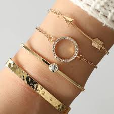

Product Interest Ladder
Which clothing pieces are converting visits into cart adds.
Admin Dashboard
Analytics is organized like a clean operations board: quick chart cards on top, health signals below, and a right-side action board for what needs attention next.

Which clothing pieces are converting visits into cart adds.
Compare outfit generator moods by save rate and cart rate.
See strong performers and current styling risks side by side.
Use this board to spot under-served clothing pieces before they turn into stale product paths.